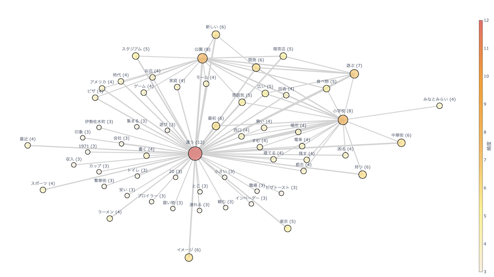
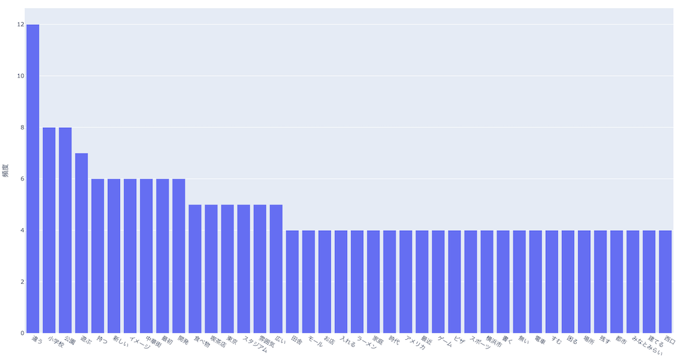

インタビュー結果
今回は「わたしのみた昭和の横浜」と言うテーマでインタビューを行った際の結果を共起ネットワークとしてまとめました。
共起ネットワーク
共起ネットワークは、文章の中で「一緒に使われやすい言葉同士の関係」を図で表したものです。

インタビューを受けてくださった方は、昔のことを話してくれるだけでなく今と比較しながら話していただいたため
「違う」が軸になった共起ネットワークになりました。
単語頻出

頻出単語から、主に日常生活の違いなどをたくさん話してくださったことがわかりました。
感想
会話を途切れさせないことで、予想していなかった情報が得られたり、より私たちに身近な回答をしていただけたと感じています。
その反面聞きたいと考えていた質問をするのを忘れてしまったので気をつけたいと思います。